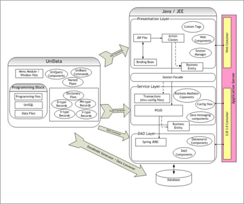

|
If any of your IT applications are running on UniBasic/UniData environment, you better hurry to
migrate them to safer and stable environment.
Non-availability of qualified manpower, growing maintenance fees, proprietary technology with an
uncertain long-term direction, and inadequate enhancements are some of the pressing challenges to
warrant UniBasic/UniData migration initiatives
Styrone Inc [Formerly known as Goldstone Info Systems] presents robust, cost-effective, and
automated tools-based migration/ modernization solutions for UniBasic/UniData applications.
As a proven leader in legacy migration solutions, our approach combines retention of the business
logic, efficiency of automated tools, and agility of re-architecture to be consistent with
enterprise architecture standards.
Our migration solutions have known to provide upto 60% cost benefits, compared to manual
re-write. With an unprecedented flexibility to re-architect (for example, thick-client to
thin-client, or SOA based or restructuring the database code to reduce the load on the database
server) or for straight migration (one-to-one), you are assured of best-in-class solution with
least investments.
UniBasic/UniData To Java/J2EE & to any Relational Database
Java/J2EE is now corporate standard for applications development. Legacy migration, and
particularly UniBasic/UniData migration, to Java technology can be expensive and risky, if not
implemented with a sound methodology. Styrone Inc brings in years of experience and scores of
legacy migrations across the globe.
Styrone’s UniBasic/UniData to Java migration solutions include:
- Automated conversion tools, for accuracy and efficiency
- UniBasic has the specific features like UniQuery, Named Pipes, UniSQL, UniBasic commands, data
files,;
- Styrone has the equivalent frameworks in java to achieve the same functionality
- Providing recommendations / solutions for the issues that are there in the current application
- Data files will be converted into Relational Database Model (By considering normalization
principles); It includes handling the single value, multi value and multi sub value parameters
effectively
- Robust migration methodology
- Character based screens will be converted to equivalent thin client or thick client based on
the requirement; The standard GUI principles will be applied while migrating these character
based screens
- Re-architecture for web-clients or SOA
- Adoption of industry-standard design patterns and frameworks
- Best practices of application management
- Global delivery model, where needed, for faster and cost effective implementations
Architecture mapping:
The below diagram represents the architectural mapping of UniBasic/UniData program to the
proposed architecture in J2EE environment (with the use of JEE framework)

Automated Tools
Styrone Inc uses a suite of proprietary tools for UniBasic/UniData Migration. Our tools assist in
every phase of the project – starting form assessment, to Data Model generation (suiting to
RBDMS principles), GUI design, to business logic conversion. Our tools work for all versions of
UniBasic/UniData. The migrated code can be deployed on any J2EE-compliant application servers such
as Websphere, GlassFish, Jboss, Oracle iAS etc. to take the advantage of extensive capabilities of
enterprise applications. These tools will help to improve the developer productivity which intern
reduces the total migration time of the application. These automated tools will remove the human
errors from the migration process
The following are brief features of the tools of Styrone for UniBasic/UniData [U2] migration to
Java / JEE Technologies [U22J]
- U22J Analyzer©
- Used for Sizing of the application and generate the metrics of the application [Total
number of UniBasic/UniData files and their names, LOC per UniBasic/UniData and total LOC for
the project, Total number of functions, Number of UniSQL, Number of UniBasic Commands,
Number of data files, Number of UniQuery reports Total number of conditional statements,
Total number of programming loops,
- Helps in Estimation of effort
- U22J Data Model Generator©
- Used for generating the data model based on the data files available in the application;
This tool will facilitate up to 1st normal form
- U22J Data Migration©
- Used for extracting all the data which was stored in the data files and import the same in
the newly created database (thru Data Model generator)
- U22J GUI Converter©
- Based on the technology chosen by the customer, the windows Generation will be carried out
using [JGoodies / Flex / JSP, Struts, Ajax, HTML]
- U22J Code Converter©
- The 4gl code / database code (specific to business logic) like Program Units, LOV's,
Record Groups will be converted to equivalent to standard Java code
- U22J DAO Converter©
- Generation of DAO Layer code.
- U22J Traceability Generator©�[semi automation]
- Map UniBasic/UniData code to Java code [to establish the proof that no code is missed out]
Methodology
UniBasic/UniData applications usually provide critical business functionalities and are,
therefore, often complex. Our migration approach recognizes and accommodates the need of
businesses to continually evolve the application under migration.
While our automated migration tools guarantee significant savings in effort and costs, our proven
and perfected 'UniBasic/UniData2J Migration Process' is equally important for successful
UniBasic/UniData migration. Be it scoping the project, or selecting a suitable candidate for
proof-of-concept (POC), or validating target architecture, or slicing the application for allowing
the changes in the source application while the migration is under progress - our approach takes
care of it all.
Our UniBasic/UniData migration approach consists of –
- Assessment
- Architecture Migration using compatible J2EE architecture patterns and design patterns
suitable for target environment.
- Architecture validation to validate the critical architectural parameters to study and
understand in the existing system and to propose the equivalent in the migrated system
- Preparing the application specific reusable frameworks which will provide the extendibility
and better maintainability of the application
- Source Code Migration using automated migration tools followed by manual re-factoring
- GUI Migration to equivalent in J2EE using automated tools
- Business logic Migration to equivalent in J2EE using automated tools
- Identification of reusable business components and expose them as services
- Code traceability of existing code to the migrated code to ensure all code migrated properly
- Identification of dead code and removing it
- Using standard open source frameworks for the application development
- Unit testing, Integration testing, system testing, user-acceptance testing for each vertical
Slice
- Parallel co-existence of UniBasic/UniData and J2EE systems during migration cycle
- System testing and user-acceptance testing for the entire migrated application
- Deployment of migrated system in production environment
The migrated code is completely independent of UniBasic/UniData environment. It will not maintain
any wrappers and directly runs on Java / J2EE environment.
Migration Goals and Objectives:
- End-to-end migration using tool-based approach
- Analyzer™, Data Model Generator, Data Converter, GUI Designer™, Code
Converter™, DAO Converter & Traceability Generator
- Architecture
- Compatible with J2EE standards [flexible, extendable & maintainable]
- UniBasic/UniData to Java thick client (Swing-JGoodies) or web client [JSP / HTML] or Flex
- Business functionality should remain same
- Should incorporate standard Java / GUI design patterns
- Converting to RDBMS
- Providing the relational database compliance for the migrated application
- SOA compliance
- Provide a facility to expose re-usable business components as services
- Deployment Flexibility
- Client application using Java Web Start
- Server application under J2EE App Server, BEA Web Logic 9.x
- Code Quality [ease of maintenance]
- Coding standards: For ease of understanding / maintenance existing naming conventions will
be followed for migrated code
- Newly developed code will be compliant with Sun Java standards
- Retaining of existing code comments
- Method descriptions will be moved to Java doc
- Code comments / description will be retained as is in the converted code
- Knowledge transfer
- Continuous basis thru reviews/walk-thru of Architecture / code /test cases
- External integrations
- Will be suitably migrated
- Provision to provide services interface [WS, JMS..]
|